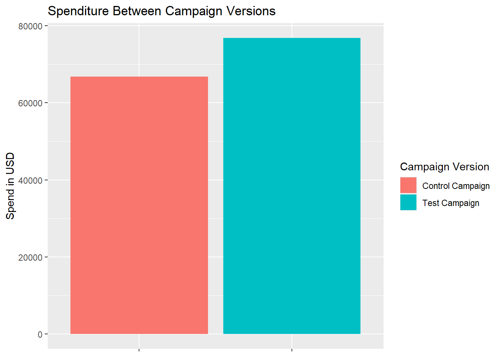

library(tidyverse)ab-test-analyzer
A/B Test Analyzer
0. Contents
- 1. Introduction
- 2. Data Handling
- 2.1. Data Preperation
- 2.2 Data Exploration
- 3. Hypothesis Testing
- 3.1 H1: Purchases ÷ Impressions (purchase conversion rate)
- 3.1.1 Code
- 3.1.2 Report
- 3.2 H2: Reach ÷ Impressions (unique reach ratio)
- 3.2.1 Code
- 3.2.2 Report
- 3.3 H3: Purchases ÷ Add to Cart (checkout conversion)
- 3.3.1 Code
- 3.3.2 Report
- 3.4 H4: Searches/View Content/Add to Cart ÷ Impressions (upper/mid-funnel rates)
- 3.4.1 Code
- 3.4.2 Report
- 3.1 H1: Purchases ÷ Impressions (purchase conversion rate)
- 4. Final Report
1. Introduction
The dataset shows the results of a 30 day A/B test for a fictional company’s website. The outputs are the following variables:
- Campaign Name: Name of the campaign version (Control / Test)
- Date: Date of the record
- Spend: Amount spend on the campaign in USD
- Number of Impressions: Number of impressions the ad crossed through the campaign
- Reach: The number of unique impressions received on the ad
- Number of Website Clicks: Number of website clicks received through the ad
- Number of Searches: Number of users who performed searches on the website
- Number of View Content: Number of users who viewed products and content on the website
- Number of Add to Cart: Number of users who added products to the cart
- Number of Purchase: Number of purchases
The data shows no Average Spend per Purchase variable. Therefore a complete analysis of campaign effectiveness gets harder. Metrics such as ROAS or ROI are impossible to measure with the available data.
However, the data allows for an analysis of engagement. Questions that can be answered are:
- Does the test campaign convert more impressions into purchases than the control campaign?
- Does the test campaign have more impressions from unique users than the control campaign?
- Does the test campaign convert more ‘add to carts’ into purchases than the control campaign?
- Does the test campaign have a lower cost per purchase than the control campaign?
2. Data Handling
2.1 Data Preparation
Load Libraries
Load Data
control <- read_delim('data/control_group.csv', delim = ';')
test <- read_delim('data/test_group.csv', delim = ';')head(control)# A tibble: 6 × 10
`Campaign Name` Date `Spend [USD]` `# of Impressions` Reach
<chr> <chr> <dbl> <dbl> <dbl>
1 Control Campaign 1.08.2019 2280 82702 56930
2 Control Campaign 2.08.2019 1757 121040 102513
3 Control Campaign 3.08.2019 2343 131711 110862
4 Control Campaign 4.08.2019 1940 72878 61235
5 Control Campaign 5.08.2019 1835 NA NA
6 Control Campaign 6.08.2019 3083 109076 87998
# ℹ 5 more variables: `# of Website Clicks` <dbl>, `# of Searches` <dbl>,
# `# of View Content` <dbl>, `# of Add to Cart` <dbl>, `# of Purchase` <dbl>Merge Data
Merge two files together:
combined_data <- control %>%
bind_rows(test)Rename Variables
combined_data <- combined_data %>%
rename(Campaign_Name = `Campaign Name`,
Spend = `Spend [USD]`,
Impressions = `# of Impressions`,
Clicks = `# of Website Clicks`,
Searches = `# of Searches`,
View_Content = `# of View Content`,
Add_Cart = `# of Add to Cart`,
Purchase = `# of Purchase`)Data Cleaning
Check the data for NA’s:
anyNA(combined_data)[1] TRUEThis shows that there are NA’s present in the data. As the data has 60 rows, a manual inspection of the data is executed.
This inspection of the data shows that one day in the control campaign has not collected data except for costs. Therefore, this row is removed
combined_data <- combined_data %>%
filter(!(is.na(Impressions) & is.na(Clicks) & is.na(Searches) &
is.na(View_Content) & is.na(Add_Cart) & is.na(Purchase)))2.2 Data Exploration
combined_data %>%
ggplot(aes(x = Campaign_Name, y = Spend, fill = Campaign_Name)) +
geom_col() +
labs(y = 'Spend in USD',
x = NULL,
fill = "Campaign Version",
title = 'Spenditure Between Campaign Versions') +
theme(axis.text.x = element_blank())
mean_spend_control <- combined_data %>%
group_by(Campaign_Name) %>%
summarize(mean_spend = mean(Spend)) %>%
pluck(2,1)
mean_spend_test <- combined_data %>%
group_by(Campaign_Name) %>%
summarize(mean_spend = mean(Spend)) %>%
pluck(2,2)
avg_spend_diff <- mean_spend_test - mean_spend_control
final_spend_diff = round(avg_spend_diff, 2)The Test Campaign is on average about $259 dollar more expensive per day than the Control Campaign.
Hypothesis Testing
totals <- combined_data %>%
group_by(Campaign_Name) %>%
summarise(sum_impressions = sum(Impressions),
sum_purchase = sum(Purchase),
sum_reach = sum(Reach),
sum_add_cart = sum(Add_Cart),
sum_clicks = sum(Clicks),
sum_view_content = sum(View_Content),
sum_searches = sum(Searches),
sum_spend = sum(Spend))
totals# A tibble: 2 × 9
Campaign_Name sum_impressions sum_purchase sum_reach sum_add_cart sum_clicks
<chr> <dbl> <dbl> <dbl> <dbl> <dbl>
1 Control Campai… 3177233 15161 2576503 37700 154303
2 Test Campaign 2237544 15637 1604747 26446 180970
# ℹ 3 more variables: sum_view_content <dbl>, sum_searches <dbl>,
# sum_spend <dbl>H1
H1: Does the test campaign convert more impressions into purchases than the control campaign?
Code
prop.test(x = totals$sum_purchase,
n = totals$sum_impressions,
alternative = 'two.sided')
2-sample test for equality of proportions with continuity correction
data: totals$sum_purchase out of totals$sum_impressions
X-squared = 1140.4, df = 1, p-value < 2.2e-16
alternative hypothesis: two.sided
95 percent confidence interval:
-0.002349960 -0.002083448
sample estimates:
prop 1 prop 2
0.004771762 0.006988466 Report
To test whether the test campaign converted more impressions into purchases than the control campaign, a chi-square test of equal proportions showed that the purchase rate differed significantly between control group (.48%) and the test group (.70%), χ²(1, N = total impressions) = 1140.40, p < .001. The difference in proportions was −0.0022, 95% CI [−0.00235, −0.00208].
The test campaign achieved a significantly higher conversion rate than the control campaign, supporting the hypothesis that the test campaign generates more purchases per impression.
H2
Reach / Purchase
prop.test(x = totals$sum_purchase,
n = totals$sum_reach,
alternative = 'two.sided')
2-sample test for equality of proportions with continuity correction
data: totals$sum_purchase out of totals$sum_reach
X-squared = 2014.5, df = 1, p-value < 2.2e-16
alternative hypothesis: two.sided
95 percent confidence interval:
-0.004038771 -0.003680995
sample estimates:
prop 1 prop 2
0.005884332 0.009744215 Impressions / Reach
- Does the test campaign have more impressions from unique users than the control campaign?
prop.test(x = totals$sum_reach,
n = totals$sum_impressions,
alternative = 'two.sided')
2-sample test for equality of proportions with continuity correction
data: totals$sum_reach out of totals$sum_impressions
X-squared = 65577, df = 1, p-value < 2.2e-16
alternative hypothesis: two.sided
95 percent confidence interval:
0.09300456 0.09446628
sample estimates:
prop 1 prop 2
0.8109267 0.7171913 H3
- Does the test campaign convert more ‘add to carts’ into purchases than the control campaign?
prop.test(x = totals$sum_purchase,
n = totals$sum_add_cart,
alternative = 'two.sided')
2-sample test for equality of proportions with continuity correction
data: totals$sum_purchase out of totals$sum_add_cart
X-squared = 2226.7, df = 1, p-value < 2.2e-16
alternative hypothesis: two.sided
95 percent confidence interval:
-0.1968842 -0.1813794
sample estimates:
prop 1 prop 2
0.4021485 0.5912803 totals %>%
group_by(Campaign_Name) %>%
summarize(cpp = sum_spend/sum_purchase)# A tibble: 2 × 2
Campaign_Name cpp
<chr> <dbl>
1 Control Campaign 4.41
2 Test Campaign 4.92prop.test(x = totals$sum_purchase,
n = totals$sum_spend,
alternative = 'two.sided')
2-sample test for equality of proportions with continuity correction
data: totals$sum_purchase out of totals$sum_spend
X-squared = 117.48, df = 1, p-value < 2.2e-16
alternative hypothesis: two.sided
95 percent confidence interval:
0.01925915 0.02781441
sample estimates:
prop 1 prop 2
0.2268999 0.2033632